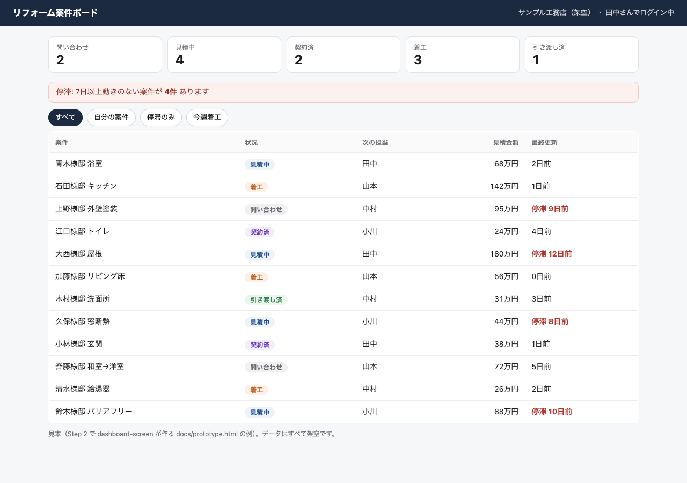

はじめに
自社のダッシュボードを、自分たちで作って公開する
題材は「ダッシュボードを1本作る」。持ち帰るのは、その過程で使う環境と進め方そのものです。
1日目の終わりに、自社の画面が自分のURLで開き（ログインして一覧が見える）、明日やることが1行で決まっている状態になります。
日程
10月6日(火)・7日(水)
参加
10社
1日目
講義と作業（まる1日）
2日目
自社の個別学習
このサイトの使い方
左の目次を上から下へ進めば、2日間が過ごせるように並べてあります。各ページの一番下の青いボタンで、次のページへ進めます。
目次の全体図
flowchart LR A["はじめに
このページ"] --> B["合宿の前に
事前準備"] B --> C["合宿中、手元に置く
日程・スキル・リポジトリ"] C --> D["1日目の講義
粗く作る→研究→計画→作り直す"] D --> E["2日目から
自分で進める"]
| 目次のセクション | いつ読むか | 中身 |
|---|---|---|
| 合宿の前に | 10月6日までに | 事前準備。困りごとのメモ、Codexのインストール、アカウント作成 |
| 合宿中、手元に置く | 当日の朝と、迷ったとき | 日程と時間割、道具（スキル一覧）、リポジトリ一覧 |
| 1日目の講義 | 10月6日、講義に合わせて | なぜやるのか → 環境とAIの初期設定 → 作り方の4段階 → 作る（8ステップ） → 迷ったときの進め方 |
| 2日目から | 10月7日と、その後 | 翌日以降の進め方 |
たとえるなら
自分の会社に台所をひとつ作る2日間です。材料（データ）の置き場と、火の入れ方（手順）を決めれば、料理（画面）はAIが手伝って作ってくれます。1日目は1品作れたら成功です。
完成するとこうなる（見本を触る）
架空の工務店で作った「リフォーム案件ボード」の見本です。1日目のStep 2（段階1 粗く作る）で作るMVPの例で、ボタンを押すと絞り込みが動きます。

MVPの見本
Step 2（粗く作る）で作る、触れる試作。
README の見本
Step 3（研究）で書く、困りごとと業務の言葉。
スキーマの見本
Step 4（計画）で作る、テーブルとER図。
ロードマップの見本
Step 4（計画）で書く、作る順番とキーの表。
持ち帰るもの
本番URL
自社の1業務が、ログインして一覧で見える状態。
手元の環境
エージェント、スキル20本、AIの初期設定（モデルの使い分け）。次の案件でも同じ手順が使えます。
設計ドキュメント
README・スキーマ・ロードマップ。AIに毎回説明しなくて済みます。
残りのスライス
明日以降にやることの一覧。ガイドに「次は？」と聞けば進みます。